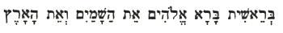

Home
Lecture I
Munich August 17, 1910 – GA 122
If anyone who has a background of Spiritual Science, and has absorbed something of its teaching about the evolution of the world, then goes on to study those tremendous opening words of our Bible, an entirely new world should dawn upon him.
There is probably no account of human evolution so open to misinterpretation as this record known as Genesis, the description of the creation of the world in six or seven days. When the person of today calls to life in his soul, in any language familiar to him, the words In the beginning God created the heaven and the earth, they convey to him scarcely a faint reflection of what lived in the soul of an ancient Hebrew who allowed the words to work upon him. It is not in the least a question of being able to replace the old words by modern ones; it is much more important that we should have been prepared by Anthroposophy to feel at least something of the mood which lived in the heart and mind of the Hebrew pupil of old when he brought to life within himself the words: B'reschit tiara Elohim et haschamayim w'et ha'arets. [See Figure 1, below.] A whole world lived while such words were vibrating through his soul.

Figure 1
What was it like — this inner world which lived in the soul of the pupil? We can only compare it with what can take place in the soul of a person to whom a seer has described the pictures he experienced on looking into the spiritual world. For what in the last resort is Spiritual Science but the outcome of seership, of the living intuitions which the seer receives when, having freed himself from the conditions of sense-perception and of the intellect bound up with the physical body, he looks with spiritual organs into the spiritual worlds? If he wishes to translate what he sees there into the language of the physical world, he can only do so in pictures, but if his descriptive powers suffice, he will do it in pictures which are able to awaken in his hearers a mental image corresponding with what he himself sees in the spiritual worlds. Thereby something comes into existence which must not be mistaken for a description of things and events in the physical sense-world; something comes into existence which we must never forget belongs to an entirely different world — a world which does indeed underlie and maintain the ordinary sense-world of our ideas, impressions and perceptions, yet in no way coincides with that world.
If we want to portray the origin of this our sense-world, including the origin of man himself, our ideas cannot be confined to that world itself. No science equipped only with ideas borrowed from the world of the senses can reach the origin of sense-existence. For sense-existence is rooted in the supersensible, and although we can go a long way back historically, or geologically, we must realise that, if we are to reach to actual origins, there is a certain point in the far distant past at which we must leave the field of the sense-perceptible and penetrate into regions that can only be grasped supersensibly. What we call Genesis does not begin with the description of anything perceptible by the senses, anything which the eyes could see in the physical world. In the course of these lectures we shall become thoroughly convinced that it would be quite wrong to take the opening words of Genesis as referring to events which can be seen with the physical eyes. So long as one connects the words “heaven and earth” with any residue of the physically visible, one has not reached the stage to which the first part of the Genesis account points us. Today there is practically no way of obtaining light upon the world it describes except through Spiritual Science. Through Spiritual Science we may indeed hope to approach the mystery of the archetypal words with which the Bible opens, and get some inkling of their content.
Wherein lies their particular secret? It lies in the fact that they are written in the Hebrew tongue, a language which works upon the soul quite differently from any modern language. Although the Hebrew of these early chapters may not perhaps have the same effect today, at one time it did work in such a way that when a letter was sounded it called up in the mind a picture. Pictures arose in the mind of anyone who entered with lively sympathy into the words and allowed them to work upon him — pictures harmoniously arranged, organic pictures, pictures which may be compared with what the seer can still see today when he rises from the sensible to the supersensible. The Hebrew language, or, rather, the language of the first chapters of the Bible, enabled the soul to call up imaginal pictures which were not wholly unlike those that are presented to the seer when, freed from his body, he is able to look into supersensible regions of existence.
In order to realise in some measure the power of these archetypal words we must disregard the pale and shadowy impressions which any modern language makes upon the soul, and try to get some idea of the creative power inherent in sound-sequences in this ancient tongue. It is of immense importance that in the course of these lectures we too should seek to place before our souls the very pictures which arose in the Hebrew pupil of old when these sounds worked creatively in him. In fact, we must find a method of penetrating the primeval record entirely different from those used by modern research.
I have now given you an indication of our line of approach. We shall only slowly and gradually learn to comprehend what lived in the ancient Hebrew sage when he allowed those most powerful words to work upon him, words which we do at least still possess. So our next task will be to free ourselves as far as possible from the familiar, and from the ideas and images of “heaven and earth,” of “Gods,” of “creation,” of “in the beginning,” which we have hitherto held. The more thoroughly we can do this the better we shall be able to penetrate into the spirit of a document which arose out of psychic conditions quite different from those of today.
First of all we must be quite clear as to the point of time in evolution we are speaking of, when we deal with the opening words of the Bible. You know of course that contemporary clairvoyant investigation makes it possible to describe to some extent the origin and development of our earth and of human existence. In my book, An Outline of Occult Science, I tried to describe the gradual growth of our earth as the planetary scene of human existence through the three preliminary stages of Saturn, Sun and Moon. [ To avoid ambiguity, capital letters will be used throughout these lectures for the words Sun and Moon, when they refer to the planetary evolutions preceding that of the earth.] Today you will have in mind, at least in broad outline, what I described there. At what point then in the spiritual scientific account should we place what draws near to our souls in the mighty word B'reschit? Where does it belong?
If we look back for a moment to ancient Saturn, we picture it as a cosmic body having as yet nothing of the material existence to which we are accustomed. Of all that we find in our own environment it has nothing but heat. No air or water or solid earth is as yet to be found upon ancient Saturn; even where it is densest, there is only fire — living, weaving warmth. Then, to this living, weaving warmth a kind of air or gaseous element is added; and we have a true picture of the Sun existence if we think of it as an interweaving, an interpenetration, of a gaseous, airy element and a warmth element. Then comes the third condition, which we call the Moon evolution. There the watery element is added to the warmth and the air. There is as yet nothing of what in our present earth we call solid. But the old Moon evolution has a peculiar characteristic. It divides into two parts. If we look back upon old Saturn, we see it as a single whole of weaving warmth; and the old Sun we still see as a mingling of gaseous and warmth elements. During the Moon existence there takes place this separation into a part which is Sun and a part which retains the Moon nature. It is only when we come to the fourth stage of our planetary evolution that the earth element is added to the earlier warmth, gaseous and watery elements. In order that this solid element could come into existence, the division which had taken place previously during the Moon evolution had first to repeat itself. Once again the sun had to withdraw. Thus there is a certain moment in the evolution of our planet when, out of the universal complexity of fire and air and water, the denser, more earthy element separates from the finer, gaseous element of the sun; and it is only in this earthy element that what we today call solid is able to form.
Let us concentrate on this moment, when the sun withdraws from its former state of union with the rest of the planet and begins to send its forces to the earth from without. Let us bear in mind that this was what made it possible within the earth for the solid element — what we today call matter — to begin to condense. If we fix this moment firmly in our minds we have the point of time at which Genesis, the creation story, begins. This is what it is describing. We should not associate with the opening words of Genesis the abstract, shadowy idea we get when we say “In the beginning,” which is something unspeakably poor compared with what the ancient Hebrew sage felt. If we would bring the sound B'reschit before our souls in the right way, there must arise before us — in the only way it can do so, in mental images [representations]— all that happened through the severance of sun and earth, all that was to be found at the actual moment when the separation into two had just taken place. Furthermore, we must be aware that throughout the whole of the Saturn, Sun and Moon evolutions spiritual Beings were its leaders and its bearers; and that warmth, air, water are only the outer expressions, the outer garments of spiritual Beings who are the reality. Thus when we contemplate the condition which obtained at the moment of separation of sun and earth, and picture it to ourselves in thoughts full of material images, we must also be conscious that the elementary “water,” “air,” “fire,” which we have in our mind's eye, is still only the means of expression for moving, weaving spirit which, during the course of the preceding Saturn, Sun and Moon stages had advanced, had progressed, and at the time now being described had reached a certain stage in its evolution.
Let us place before us the picture of an immense cosmic globe composed of weaving elements of water, air or gas and fire, a globe which splits apart into a solar and an earthly element; but let us conceive too that this elementary substance is only the expression of a spiritual one. Let us imagine that from this substantial habitation, woven of the elements of water, air and heat, the countenances of spiritual beings, moving within it, look out upon us, spiritual beings who reveal themselves in this element - which we have had to represent to ourselves through material images. Let us imagine that we have before us spiritual beings turning their countenances towards us, using their own soul-spiritual forces to organise cosmic bodies with the help of warmth, air and water. Let us try to imagine this!
There we have a picture of an elementary sheath which, to give a very rough sensory image of it, we may liken to a snail-shell, but a shell woven not of solid matter like the snail's, but from the elements of water, air and fire. Let us think of spirit, in the form of countenances within this sheath gazing upon us, using this sheath as a means of manifestation, a force of revelation which manifests outward from what lies hidden in the supersensible.
Call up before your souls this picture which I have just tried to paint for you, this image of the living weaving of spirit into a kind of matter; imagine too the inner soul-force which causes it to happen; concentrate for a moment on this to the exclusion of all else, and you will then have something approximating what lived in an ancient Hebrew sage when the sounds B'reschit penetrated his soul. Bet [Figure 2] the first letter, called forth the weaving of the habitation in substance; Resch , the second sound, summoned up the countenances of the spiritual Beings who moved within this dwelling, and Schin, the third sound, the stinging force which worked its way out from within to manifestation.
Figure 2
Now the underlying principle behind such a description is dawning upon us. And when we have grasped it, we are able to appreciate something of the spirit of this language; it had a creativity of which modern people with their abstract speech have no inkling.
Now let us place ourselves at the moment immediately preceding the physical coagulation, the physical densification of our earth. Let us imagine it as vividly as possible. We shall have to admit that in describing what was taking place at that moment we cannot make use of any of the ideas which we use today to describe processes in the external world. Hence you will see that it is utterly inadequate to associate any external act with the second word we meet in Genesis — bara — however closely that act might resemble what we understand today as creation. We do not thus get near to the meaning of that word. Where can we turn for help? The word implies something which lies very near the boundary where the sensible passes over directly into the supersensible, into pure spirit. And anyone who wishes to grasp the meaning of the word bara, which is usually translated “created” (In the beginning God created ...), must in no wise associate it with any productive activity which can be seen with physical eyes.
Take a look into your own inner being! Imagine yourselves as having been asleep for a while, then waking up and, without opening your eyes to things around you, calling up in your souls by inner activity certain images. Bring home vividly to yourselves this inner activity, this productive meditation, this cogitation which calls forth a soul-content from the depths of the soul as if by magic. If you like you can use the word “excogitate” for this conjuring up of a soul-content out of the depths into the field of consciousness; think of this activity, which man can only perform with his mental images, but think of it now as a real, cosmic, creative activity. Instead of your own meditation, your own inward experience in thinking, try to imagine cosmic thinking; then you have the content of the second word of Genesis, bara. However spiritually you may think it, you can only liken it to the thoughts you are able to bring before yourselves in your own contemplation; you cannot get nearer to it than that!
And now imagine that during your contemplation two kinds of images come to mind. Suppose there is a person to whom on awakening two different kinds of thought occur. Suppose that one kind of thought is the picture either of some activity or of some external thing or of some being; it does not come about through external sight, through perception, but through reflection, through the creative activity of his soul in the field of his consciousness. Suppose that the second complex of ideas which arises in this awakening person is a desire, something which the person's whole disposition and constitution of soul can prompt him to will. We have elements both of thought and of desire coming up in our souls through inner reflection. Now imagine instead of the human soul the beings called in Genesis the Elohim reflecting within themselves. Instead of one human soul, think of a multiplicity of reflecting spiritual beings who, however, in a similar way — save that their contemplation is cosmic — call forth by reflection from within themselves two complexes which might be compared with what I have just been describing: a pure thought and a desire. Thus instead of thinking of the contemplating human soul, we think of a group of cosmic beings who awaken in themselves two complexes; one of the nature of thought or ideation, that is, one which manifests something, expresses itself outwardly, phenomenally; and another of the nature of desire, which lives in inner movement, inner stimulation, which is permeated with inner activity. Let us think of these cosmic beings, who in Genesis are called the Elohim, contemplating in this way. The word bara, “created,” brings their contemplation home to us. Then let us think that through this creative contemplation two complexes arise, one tending towards external revelation, external manifestation, and another consisting of an inward stimulus, an inward life; then we have the two complexes which arose in the soul of the ancient Hebrew sage
when the words haschamayim and ha'arets — represented for the modern man by “heaven” and “earth” — resounded through his soul. Let us try to forget the modern person's conception of “heaven and earth.” Let us try to bring the two complexes before the soul, the one which tends more to disclose itself, tends to outward manifestation, is disposed to call forth some outside effect; and the other complex, the complex of inner stimulation, of something which would experience itself inwardly, something which quickens itself inwardly; then we have what expresses the meaning of the two words haschamayim and ha'arets.As for the Elohim themselves, what kind of beings are they?
In the course of these lectures we shall learn to know them better, and to describe them in terms of Spiritual Science; but for the present let us try to reach in some measure the meaning of this archetypal word Elohim. Whoever wishes to get an idea of what lived in the soul of the ancient Hebrew sage when he used this word should clearly understand that in those days there was a lively comprehension of the fact that our earth evolution had a definite meaning and a definite goal. What was this meaning and this goal?
Our earth evolution can only have meaning if during its course something arises which was not there before. A perpetual repetition of what was already there would be a meaningless existence, and unless the Hebrew sage of old had known that our earth, after having passed through its preliminary stages, had to bring something new into existence, he would have regarded its genesis as meaningless. Through the coming into existence of the earth something new became possible, it became possible for man to become man as we know him. In none of the earlier stages of evolution was man present as the being he is today, the being that he will more and more become in the future; that was not possible in earlier stages. And those spiritual beings who directed the Saturn, Sun and Moon evolution were of a different nature from man — for the moment we will not enter into the question whether they were higher or lower. Those Beings who wove in the fiery, gaseous and watery stages of elementary existence, who wove a Saturn, Sun and Moon existence, who at the beginning of earth existence were weaving its fabric — how best do we come to know them? How can we draw near to them?
We should have to go into very many things to get anywhere near an understanding of these beings. To begin with, however, we can come to know one aspect of them, and that will suffice to bring us at least one step nearer to the potent meaning of the ancient Biblical words. Let us consider those beings for a moment — the beings who stood nearest to man at the time when he was created from what had developed out of the Saturn, Sun and Moon evolutions. Let us ask those beings what they really wanted. Let us ask them what was their will, their purpose. Then we shall be able to get at least some idea of their nature. They had great ability; in the course of their evolution they had acquired capacities in various directions. One of them could do this, another that. But we understand the nature of these beings best if we realise that at the time we are now considering they were working as a group towards a common goal; they were moved by a common aim. Although at a higher level it is as if a group of humans, each with their own special skill, were to co-operate today. Each of them can do something, and now they say to each other: “You can do this, I can do that, the third among us can do something else. We will unite our activities to produce a work in common in which each of our capacities can be used.” Let us then imagine such group, a group in which each practises a different craft, but which is united by a common aim. What they intend to bring into existence is not yet there. The unit at which they are working lives to begin with only as an aim. What is there is a multiplicity. The unit lives at first only as an ideal. Now think of a group of spiritual neings who have passed through the evolutions of Saturn, Sun and Moon, each one of whom has a specific ability, and who all at the moment I have indicated make the decision: “We will combine our activities for a common end, we will all work in the same direction.” And the picture of this goal arose before each of
them.What was this goal? It was man, earthly man!
Thus humanity lived as the ultimate goal in a group of spiritual beings who had resolved to combine their several skills in order to arrive at something which they themselves did not possess, something which did not belong to them, but which they were able to achieve by combined effort. If you accept all that I have described to you — the elementary sheath, the cosmic, meditative spiritual beings working within it, the two complexes, one of desire quickening inwardly, and another manifesting outwardly — and then ascribe the common purpose I have just mentioned to those spiritual beings whose countenances gaze out of the elementary sheath, then you have what lived in the heart of the Hebrew sage of old in the word Elohim.
Now we have brought before us in picture form what lives in these all-powerful archetypal words. Then let us forget all that people of today can think and feel when they utter the words: In the beginning God created the heaven and the earth. Bearing in mind all that I have told you today, try to put this picture before you. There is the sphere in which fiery, gaseous and watery elements weave. Within this active, weaving elementary sphere a group of contemplating spiritual beings live. They are engaged in productive contemplation penetrated through and through by their intention to direct their whole operation towards the form of man. And the first fruits of their contemplation is the idea of something manifesting itself outwardly, announcing itself, and something else inwardly active, inwardly animated.
“In the elementary sheath the primeval Spirits pondered the outwardly manifesting and the inwardly mobile.” Try to bring before yourselves in these terms what is said in the first lines of the Bible, then you will have a foundation for all that is to come before our souls in the next few days as the true meaning of those all-powerful archetypal words which contain such a sublime revelation for humanity — the revelation of its own origin.
Continued in the next issue of SCR.
Thanks to the Rudolf Steiner Archive